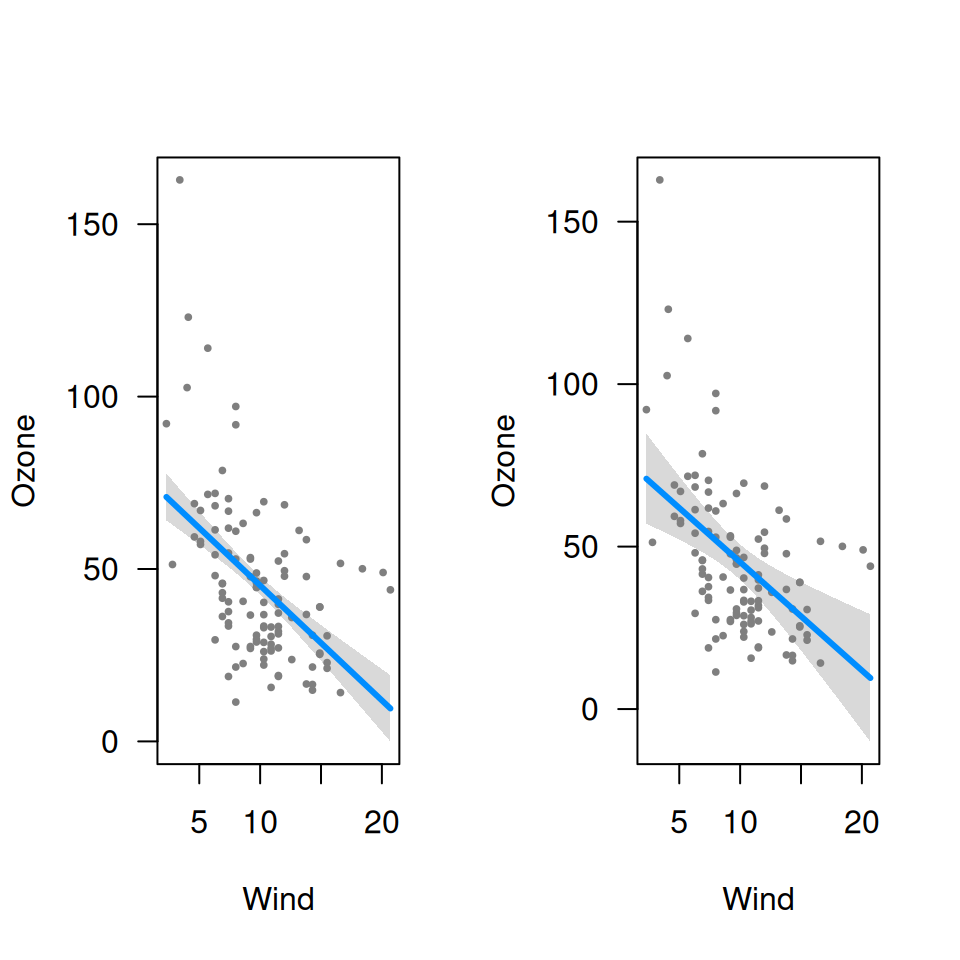
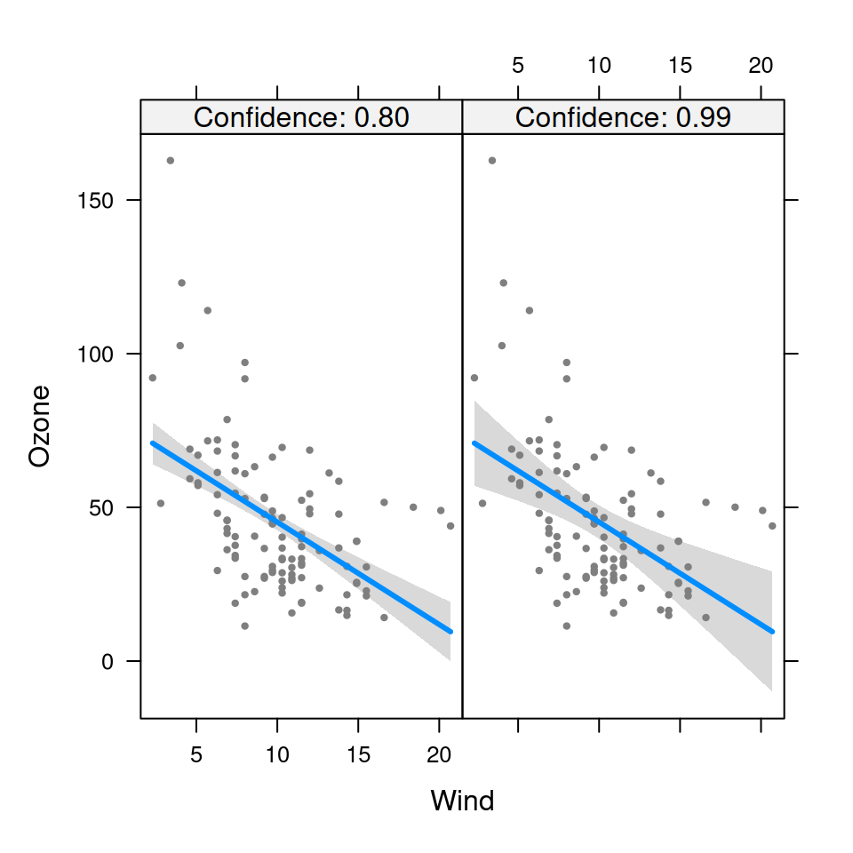

Join multiple visreg objects together in a list
visregList.RdThis function takes multiple visreg objects, from separate calls to
visreg(), and joins them together in a single object. The single object
will be of type visregList unless collapse=TRUE is specified, in
which case the list will be collapsed back down into a single visreg
object.
Arguments
- ...
visregobjects, as produced by calls tovisreg.- labels
A character vector with length corresponding to the number of
visregobjects passed to the function that provides labels for the different objects in subsequent plots. Only has an effect ifcollapse=TRUE.- collapse
If
TRUE, the resulting object will be collapsed down into a singlevisregobject. IfFALSE, the resulting object will be avisregList.
Examples
fit <- lm(Ozone ~ Solar.R + Wind + Temp, data=airquality)
v1 <- visreg(fit, "Wind", plot=FALSE, alpha=0.2)
v2 <- visreg(fit, "Wind", plot=FALSE, alpha=0.01)
vv1 <- visregList(v1, v2, collapse=FALSE)
vv2 <- visregList(v1, v2, collapse=TRUE,
labels=c("Confidence: 0.80", "Confidence: 0.99"))
op <- par(mfrow=c(1,2))
plot(vv1)

par(op)
plot(vv2)
